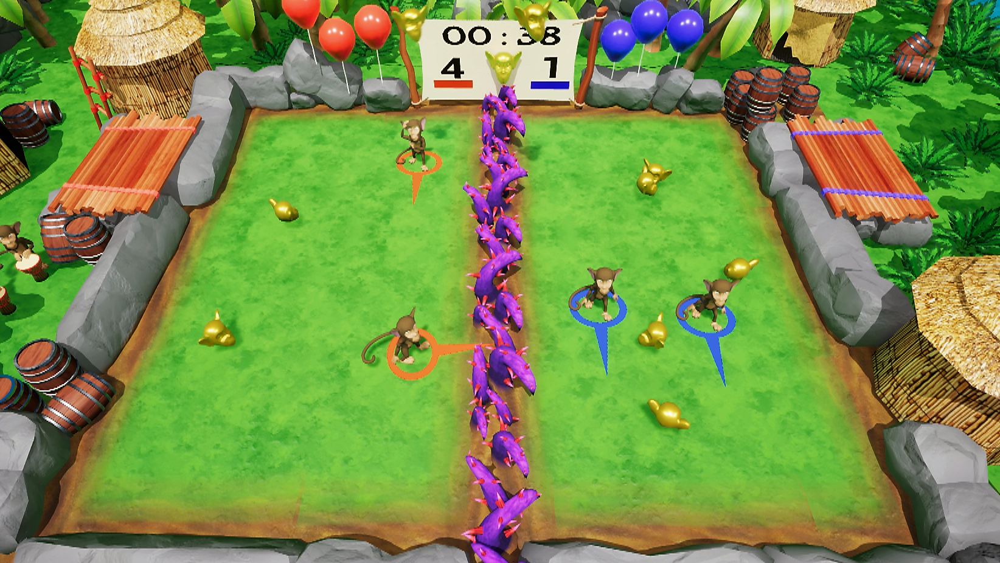
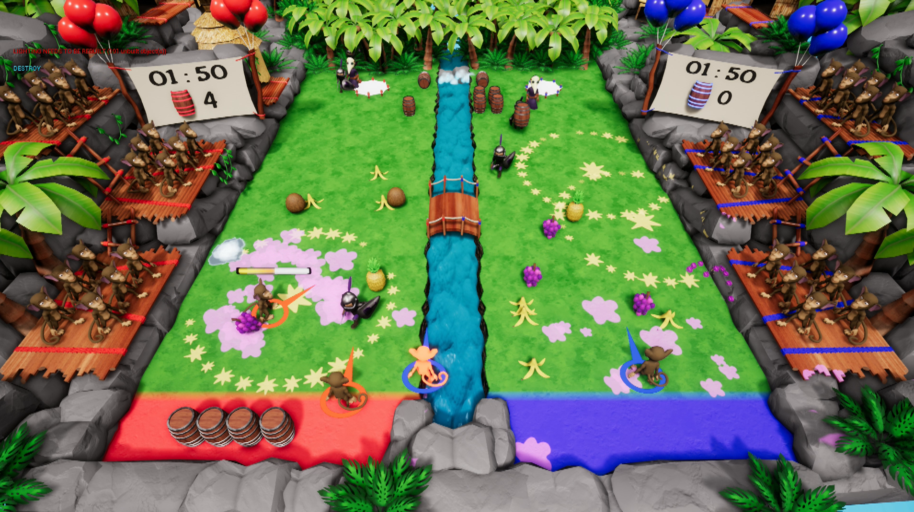
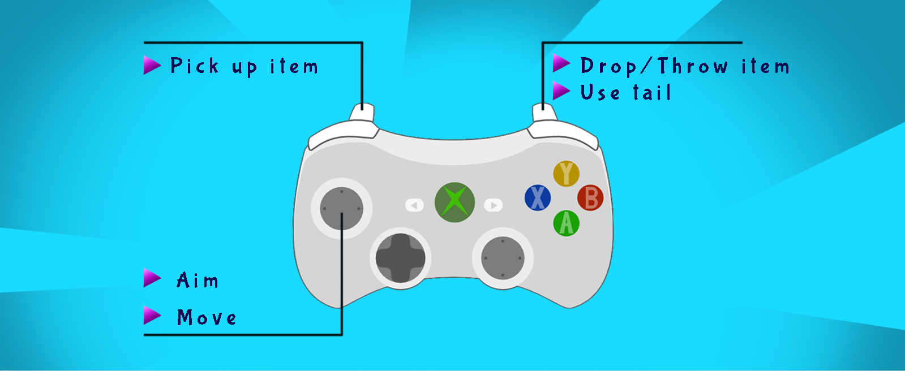

Team and Screenshots
1 / 4

2 / 4

3 / 4

4 / 4

The Bamboozling Party Game
Primal Party is a local multiplayer party game that focuses on 2vs2 competition. Initially the project was part of a 10 week Game Design course at Uppsala University.
Primal Party developed by Team Hexagonal has been part of several events beyond the academic environment. Primal Party participated in the Gotland Game Conference 2018 (GGC) and at the game jam GameCamps 2018 in Finland were the project was further developed and presented to investors.
The first version of Primal Party was developed during a 10 week period. The team Hexagonal of 6 members consisted of 2 programmers, 3 artists and 1 project manager. The ambitious team worked full time for the entire development utilizing scrum.
Each week consisted of daily standups, playtesting sessions, design meetings and team building activities. The good synergy of the team and good progress of the project pushed us to aim for continuing the development of the game further, participating in several events.
Focused mainly on developing the AI, UI and animation implementation. Developed the Coin Rush game mode.
A big pitfall in this project was the ambition and high expecations we decided to meet. Even if all of them were met during the development, the thing that we did not foresee was how all the things we planned and added would affect everything else in the experience. That is why I decided to utilize the core of our game to create a more simple gamemode, coin rush, which resulted to be very successful. Which combined the simple input but the goal and the amount of information provided to the player was reduced. We concluded that if we would continue the development we would start very small and building the small blocks that are the foundation of the project.
During the 10 week project we got very in depth working with Unreal Enginge 4. The team was split up in defined roles par to the industry and the project was developed using Scrum. Due to the sucess of the team, we decided to further push the project and present it to investors at GameCamps. This was my first contact with the industry outside of my education and it was a great opportunity for personal growth. The biggest takeway from this project was the closest contact with the industry and indepth working with scrum.